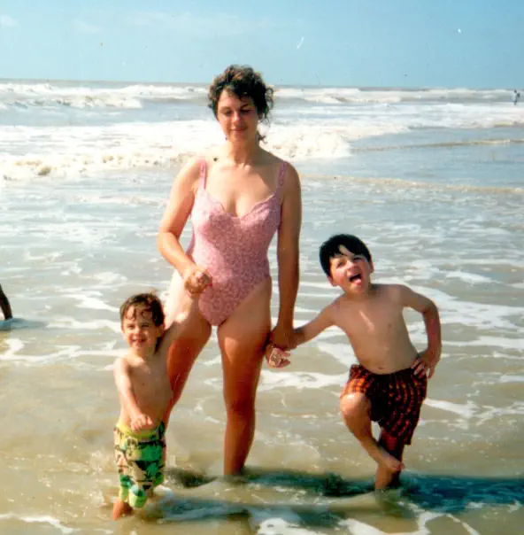
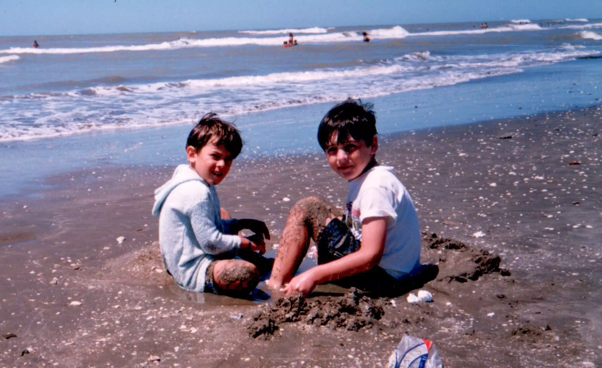

Por Gonzalo Volpe Gómez
De pequeño en Las Toninas, Buenos Aires, Argentina.
Muchas veces mis amigos y mi familia me preguntan qué le veo al mar, por qué tanta devoción por él. Para mí el mar es como una puerta ¿Saben? Una puerta que me conecta conmigo cuando era pequeño ¿Puede existir algo más grande que eso? Es paz.
Mis padres solo me avisaban que iríamos al mar dos días antes de que iniciase la travesía, porque sabían que me ponía insoportable, de hecho me sigo poniendo igual cuando sé que voy a la playa. Teníamos un ritual, cada vez que desde "ROGER" (así se llamaba el Renault viejo que tenían mis padres) veíamos al mar, ellos nos decían a mi y a mi hermano que lo saludemos y nosotros nos desesperábamos por mover nuestras manitos y no apartar los ojos del vaivén de las olas. El ritual se ampliaba hasta el último día de playa, donde íbamos los 4 a la costa y nos despedíamos del mar. Ahora estoy en un bus que conecta el aeropuerto de Cancún con Playa del Carmen y el recuerdo de mis padres y el mar se esfuma cuando el transporte se detiene y comenzamos a descender. Tengo mil valijas en mi mano y cargado de emoción le digo a Mechi: "Necesito ver el mar". Con todo el equipaje nos adentramos en las callecitas de la ciudad mexicana y vemos el azul turquesa más hermoso del mundo y sin hacer ningún gesto corporal, solo con la mente, cumplí el ritual que me enseñaron mis padres y salude al Caribe por primera vez.
Ahora tengo 25 años y el pequeño barquito rápido acaba de llegar a Maafushi, Maldivas, la isla es casi fantasma y con muy poca iluminación. Junto a Kevin y Guasti nos dirigimos al hotel que se encuentra en una de las pequeñas callecitas de arena. Estamos muy cansados, nos acostamos y mi cabeza no deja de pensar cómo será el mar de Maldivas a plena luz del día ¿Será todo eso que tanto soñe? ¿En verdad existe todo lo que vi por fotos? Pasa media hora y aún no me duermo, el insomnio se apodera de mi y a la hora el ambiente se empieza a tornar confuso ¿Estoy verdaderamente acá? ¿Cuándo amanece? De repente despierto, extasiado, voy a la única ventanita que hay en el lugar para ver si el clima es óptimo, pero me doy cuenta que para asomarme tengo que hacer puntitas de pie, me miro y no lo entiendo, tengo mi cuerpo muy pequeño, tengo 6 años y con esfuerzo logro ver que es un día de pleno sol, una felicidad inmensa me inunda y corro a despertar a mis padres y a mi hermano diciendo "arriba que hay sol y el mar nos está esperando", mi madre protesta porque quiere dormir un poco más, insisto, y ella me empieza a alistar para ir a las enormes playas de Las Toninas donde vacacioné hasta los 8 años. Salgo de la ducha y Kevin y Guasti siguen durmiendo, me cambio despacito, esta vez sin la ayuda de mi madre y me voy a ver al mar que 19 años después y en la otra punta del mundo también me está esperando.
Mi hermano, mi madre y yo en Las Toninas, Buenos Aires, Argentina.
El mar en las playas de Buenos Aires suele ser muy frío y el clima cambiante, por el día andas de traje de baño y ojotas y por las noches de campera liviana y hasta eso es mágico, cada salida de noche en familia por la costa hablando de todo lo que habíamos hecho en el día me producía una sensación de felicidad inigualable. En ese contexto es que me recuerdo sentado en una mesa con mis 7 añitos y mi papa y mi hermano se preparan para salir a pasear y hacer compras por el centro y yo quiero ir con ellos, pero cuando me preguntan niego con la cabeza. Ellos salen por la puerta y yo cuento 1, 2, 3, 4 ... 10, me paro y voy corriendo detrás de ellos implorando que no me dejen. Fue ahí, cerquita del mar, que me conocí, que por primera vez decidí sentir la incertidumbre de comprender lo que es desaprovechar una oportunidad, de dudar si ellos todavía estaban ahí o si ya se habían marchado, de quedarme con las ganas de hacer algo que quería, de sentir miedo ¿Por qué? No lo sé. Muchísimos años después entendí que sigo siendo yo el que se genera los miedos y el que me termino poniendo el límite, pero los sueños se tienen que cumplir hasta con miedo y ya no voy a dejar que nada se me escape.
Mi hermano y yo en Las Toninas, Buenos Aires, Argentina.